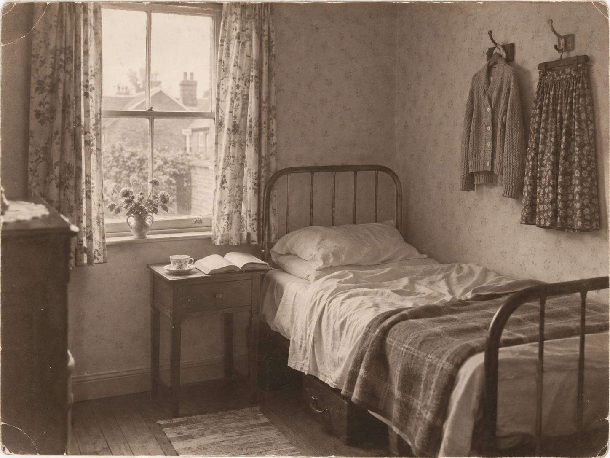
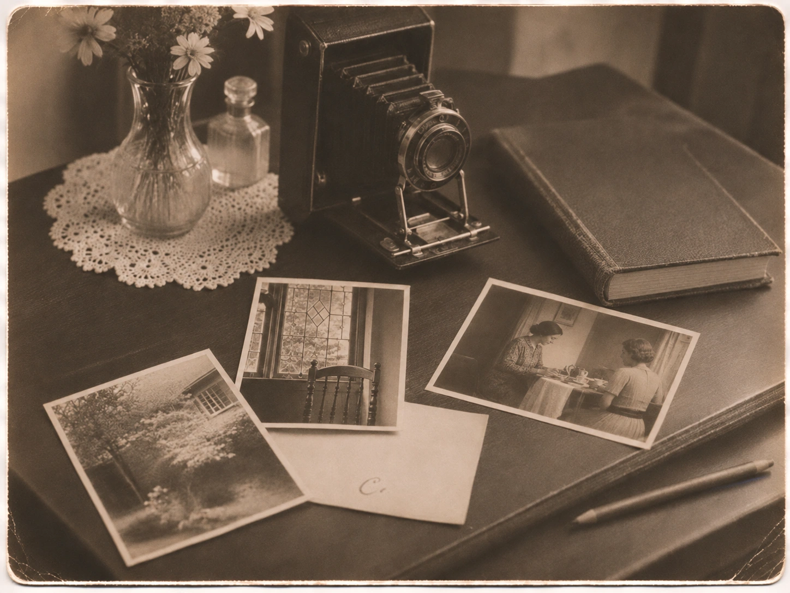
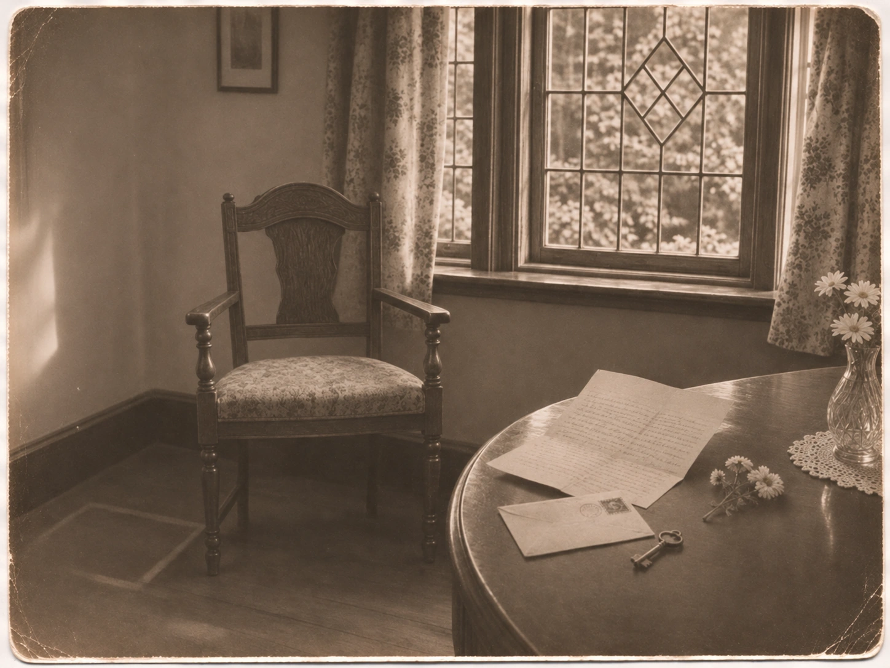

세 번째 기록의 봉인



떠날 준비
남겨진 집 안의 기록을
다시 펼쳐본다.
PHOTOGRAPHS
남겨진 사진들
각 사진을 열어 사물과 공간을 자세히 살펴보세요.
CORRESPONDENCE
두 통의 편지
빈칸을 복원해도 마지막 서명은 아직 읽을 수 없습니다.
관찰 0건복원 0 / 8
OBJECT RECORDS
사물 기록장
물건의 주인과 사용한 사람, 발견된 장소를 구별하세요.
RECORD CONNECTIONS
기록 연결하기
서로 다른 챕터의 증거를 선택하세요. 선택한 두 자료를 나란히 비교할 수 있습니다.
FINAL INFERENCE
마지막 추리
모든 자료를 연결한 후 질문에 답하세요.
CASE FILE
확인한 자료
사진과 편지를 다시 살펴볼 수 있습니다. 한 질문을 맞혔다고 나머지 기록의 답이 공개되지는 않습니다.
LAST PHOTOGRAPH
마지막 사진
빈 창가 · PHOTO 07
RESTORED ARCHIVE
《봉인된 기록 — 마지막 기록》
01 / 05
CHAPTER II